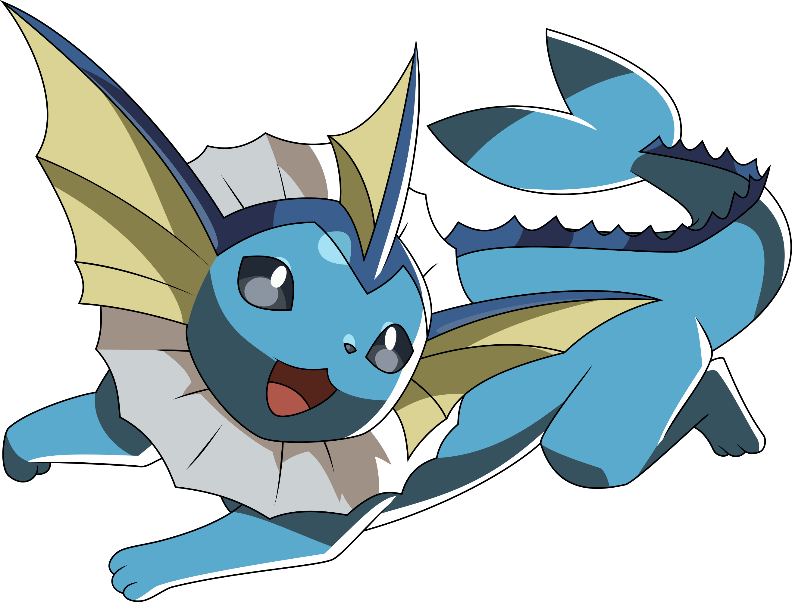
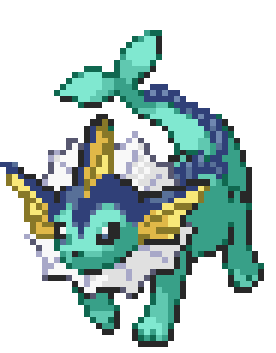
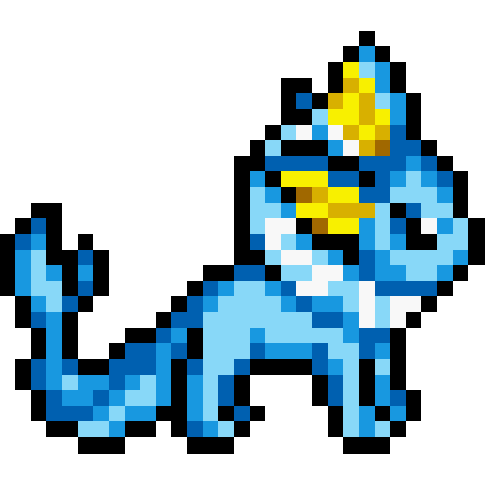
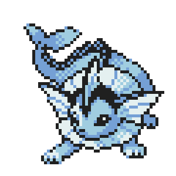

"Vaporeon is a Pokemon that shares physical traits with both aquatic and land animals. Vaporeon's body is light blue with a dark blue marking around its head and a spiky ridge down its spine. It has black eyes and a tiny black nose. There is a white fin encircling its neck and three fins with cream-colored webbing on its head. Two of these fins are on either side of its head, similar to ears; and one is directly on top of its head, resembling a dorsal fin. Vaporeon is a quadruped with three small toes on each foot and dark blue paw pads on the hind feet. Its split tail fin has been mistaken for a mermaid's in the past and is believed to be the origin of mermaid folklore. It can detect moisture with its fins, which vibrate when sensing incoming rain.
Vaporeon is mostly found in urban settings under the ownership of a Trainer. It is rarely seen in the wild, but it prefers clean freshwater lakes and shores. It has developed gills to become better suited to an aquatic lifestyle, and its cell composition's similarity to water allows it to melt into the water. This ability enables Vaporeon to remain camouflaged while swimming, hiding itself from enemies and allowing it to ambush its prey." (Sourced from Bulbapedia.)

(A Picture of a Vaporeon!)
A Vaporeon is a combination of physcial traits from fish, dolphins, cats, and dogs. a Vaporeon doesn't reperent any real life animal, but people often refer to a Vaporeon as a Fish, or a Seal.
Hey guys, did you know that in terms of human and pokemon companionship, Vaporeon is one of the best pokemon you could keep as pets? While they're quite big and heavy, which may not be for most, they don't have fur, causing them not being able to shed. Even through their big size, they love laying in your lap while you work to keep you company, they're also able to use acid armor to make themselves lighter if needed. Vaporeon with their high HP and defense aren't naturally aggressive either and are quite friendly and are more than willing to spend their time with their beloved trainer! But that doesn't mean they wouldn't protect you, if you or anyone else they treasure are in danger, they'll jump into your or their defence, having strong moves like Last Resort, Hydro Pump, Hyper Beam, Blizzard and more. Along with that, if you're a fan of swimming, Vaporeon would be a great addition to your team. Their body is covered in fins and scales, making them amazing swimmers. Not only that, but their bodily structure is similar to the structure of water and they can even blend in with the water they're in, making them fantastic players at hide and seek! They also learn moves like Water Gun, Sunny Day, Surf and Tail Whip, making your time in the water even more fun! But that's not all, they're capable of detecting the upcoming rain with its fins, so they'll always let you know when it's about to rain. And if you're having a bad day, they're always there to make you feel better with moves like Charm and Baby Doll Eyes. :D



Vaporeon Gifs!!